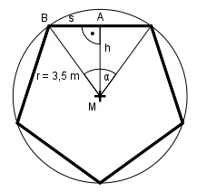

Aufgabe 106 Eine Säule hat als Querschnitt ein regelmäßiges Fünfeck mit einem Umkreisradius von 3,5 m. Wie groß ist ihre Querschnittsfläche A?

360° α = ------ = 72° 5 Im Dreieck ABM: s/2 sin α/2 = ----- |*r r r * sin 72/2° = s/2 |*2 s = 2 * 3,5 m * 0,5878 = 4,1 m h cos α/2 = --- |*r r r * cos 72/2° = h h = 3,5 m * 0,809 = 2,8 m s * h 4,1 m * 2,8 m A = 5 * ------- = 5 * --------------- = 28,7 m2 2 2